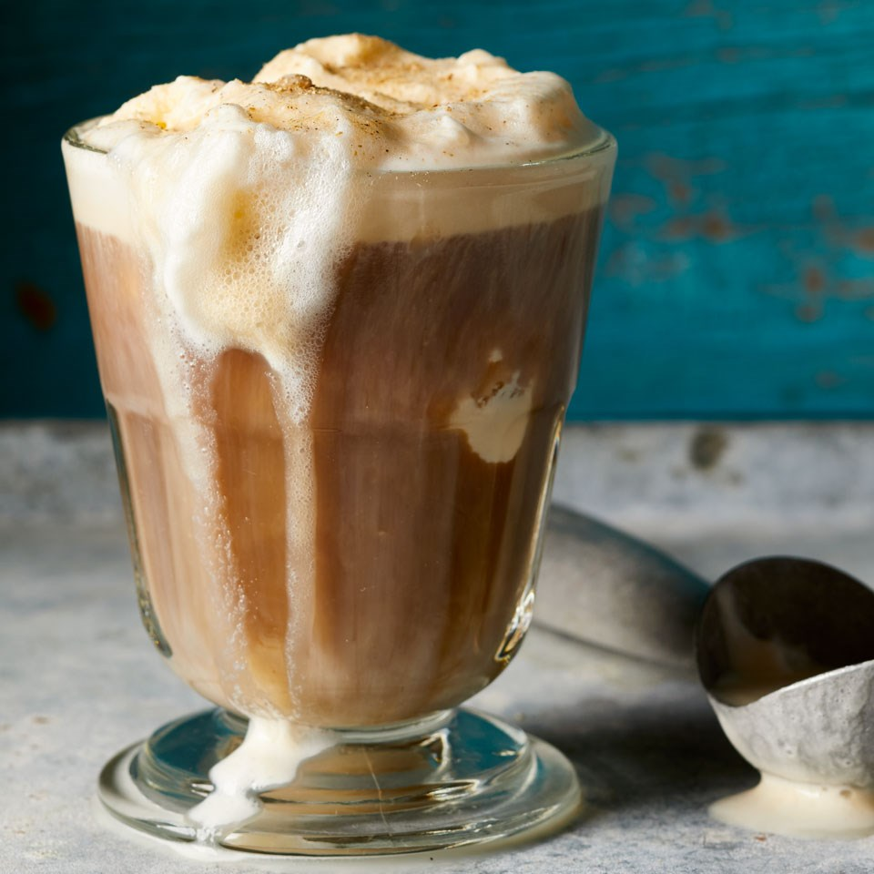

Ice cream coffee floats are one of my favorites
A nice cup of ice cream coffee float and how to make it.
I know that ice cream coffee float has beeen around for ages, but I
have never heard of it until I started using a Chinese app called
掌厨.When I first heard of it on this app and tried it for myself, I thought that it was very delicious. This can be made using a variaty of
methods. It all depends on how you want the flavor to be. This is one of the kinds of cofee that I think goes great with Shanghai's Saturnbird Coffee, which is a delicious and new type of coffee
made only in Shanghai.
Ingredients
One cup of Saturnbird coffee of your choice(of course can use any coffee brand of or flavor you like
just make a cup of coffee)
Two scoops of ice cream(can use whatever flavored ice cream you like. The lighter the color, the better the asthetics)
chocolate syrup
a coffee glass
The instructions
pour Saturnbird pack into a cup
pour hot water into a cup, but leave room enough to put ice cream. I'd fill it up less than two thirds of the way.
cover the cup with plastic wrap and put it in the refrigerator for thirty minutes.
after thirty minutes, take cup out of the refrigerator and take off the plastic wrap.